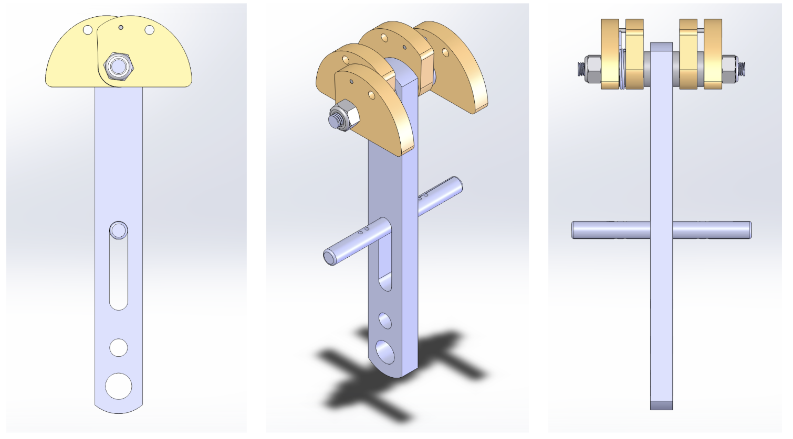
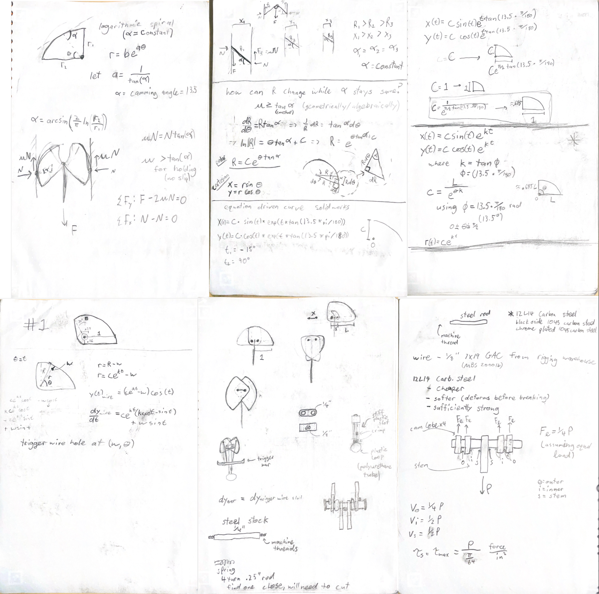
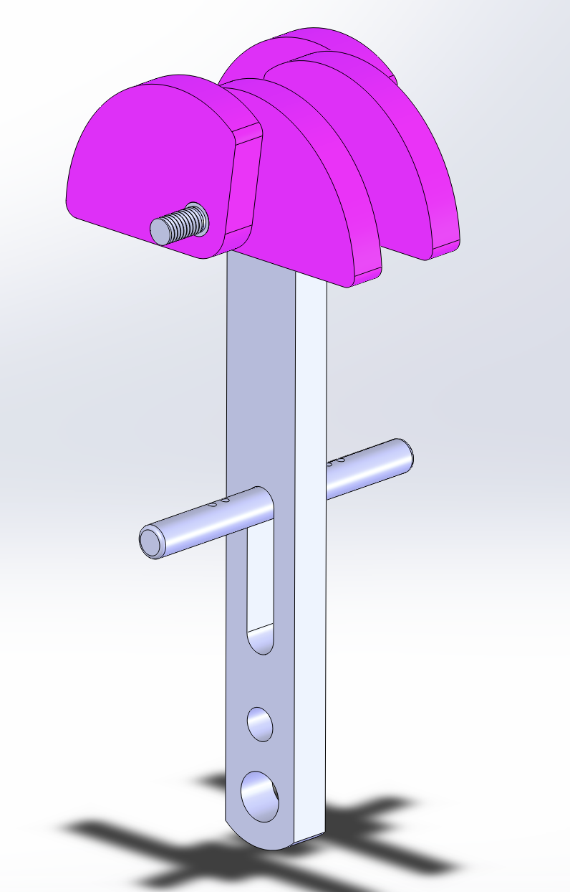
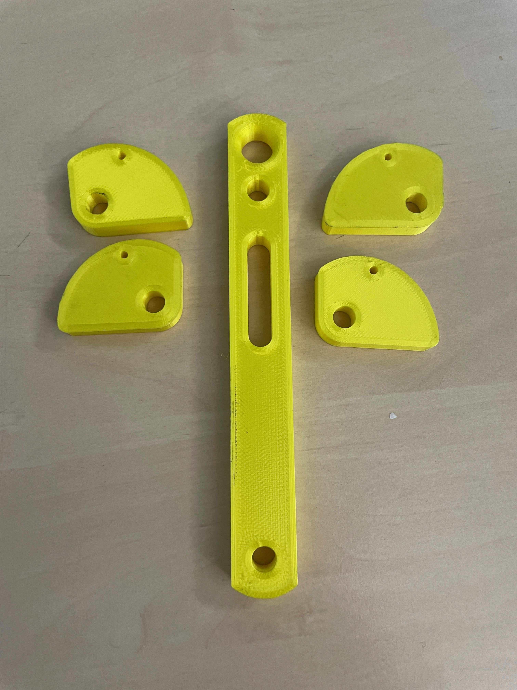
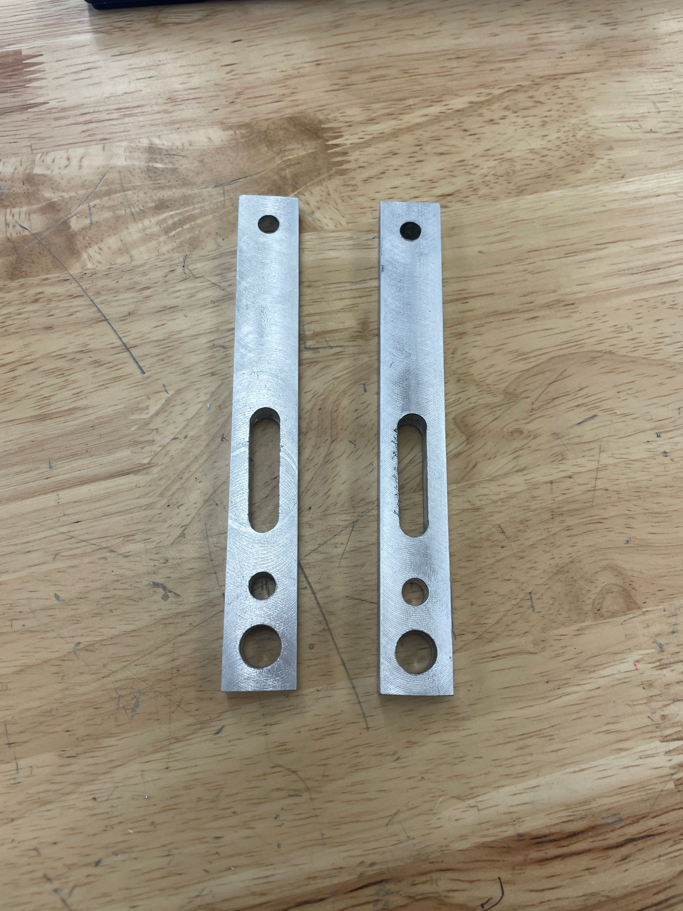

Homemade Cam
By Cole Rutkowski
THIS PROJECT IS INCOMPLETE

Why I started this Project:
As an engineering student and trad climber, I had always looked at cams and thought “I could make this”. At this point, I I had taken an introductdory CAD and machining class. I had never made anything before, but I wanted to. What better way to learn than the hard way?
Research
I began this project with extensive research on the history and design of cams. There is little formalized information on cams on the internet, so my sources consisted of reading a mixture of patents, research projects, and forums such as Mountain Project, UK Climbing, and SuperTopo. Through my research, I gathered a broad and full understanding of innovation in protective equipment since the invention of mountaineering as well as a mathematical understanding of these devices. I also researched and studied the materials, materials properties, and contact mechanics used in existing devices. You can find the history of cams in my reports "Material Report: Aluminum 6061" and "How Cams Work". I then went on to derive my own designs and equations for Solidworks.
Notes on Cam Design

Early Model

Prototypes
I modeled each part to be manufactured with a CNC mill and hand tools, which allowed me to use equation-driven curves and designs I could not make every component on a manual lathe and mill. After designing the main components, I put them in assembly and created drawings. I then 3D printed my first plastic prototype on a Prusa MK4 printer with great success. I was finally ready to manufacture my first real prototype.
First Prototype

Machined Stems

Haitus
This project has been put on a temporary pause due to funding issues i.e. I don't want to pay for manufacturing. I previously had access to free waterjet cutting and only paid material costs, but that is no longer available. I have since become more proficient with CAM and 2-axis CNC milling, but I have not had the time to learn complex programming on that mill. Slots, holes, and radii are readily supported but they have yet to add a logarithmic spiral feature. Back to the drawing board. I plan to look into other shops for manufacturing, but I have not yet made the time between work, school, and leisure commitments. I'm excited to get this project going in the future!